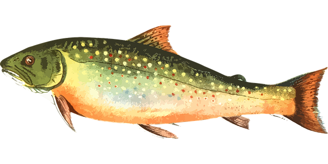

Biodiversidad

Mamiferos
Los mamíferos del Departamento del Cauca, Colombia, representan una riqueza natural invaluable,
con especies emblemáticas como el oso de anteojos (Tremarctos ornatus) y la danta de páramo (Tapirus pinchaque).
Estas y otras especies son protegidas por las comunidades locales por su importancia ecológica y cultural.
Plantas
Las plantas del Departamento del Cauca, son un tesoro de biodiversidad, con especies icónicas como la hoja de coca (Erythroxylum coca).
Esta y otras plantas son de mucha importancia para las comunidades como los Nasa como parte integral de su identidad cultural
y relación armoniosa con la naturaleza.

Peces
Los peces en el Departamento del Cauca, forman una parte esencial de la biodiversidad acuática en la región,
con ríos y quebradas que albergan una amplia variedad de especies fundamentales para el equilibrio
ecológico de los cuerpos de agua y la subsistencia de las comunidades locales.
Las comunidades indígenas y campesinas trabajan en su preservación por su importancia cultural, económica y ecológica.